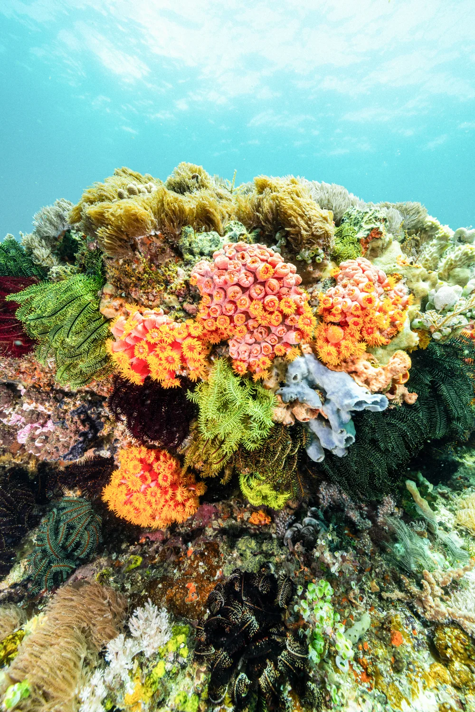

Dive Deep Into Indonesia.
WAOW 2 was designed around diving.
From the first descent to the last surfacing, every detail is there to
make your time underwater as seamless as possible.


New Sites. Every Day.
On WAOW 2, the day follows the rhythm of the sea.
A first dive in the morning. Another after brunch.
One in the afternoon.
And one more before the sun goes down.
Up to four dives a day means more time underwater,
more sites to discover and more chances to encounter
the extraordinary marine life of Indonesia.


20 guests.
5 guides.
Small groups.
Less People.
More Ocean.
With five experienced dive guides for a
maximum of 20 guests, groups are kept small
with a maximum ratio of 1 guide to 4 divers.
Small groups mean more freedom in the water,
more personal guidance and more space to
experience each dive at your own pace.
Our guides bring years of experience, a deep
knowledge of each region and, most importantly,
a genuine love for being underwater.
Built for Diving.
Dive Centre
A dedicated space for gear preparation, storage and rinsing.
Dive Tenders
Comfortable tenders make it easy to reach remote dive sites.
Camera Room
Set up, charge and care for your underwater photo and video
equipment between dives.

Less logistics
more bottom time


Dive Longer.
Learn Along the Way.
Make more of your time underwater, or take the opportunity
to learn something new while you're on board.
Nitrox
More time underwater. Nitrox is available on board for certified
divers free of charge. Nitrox matters more on a liveaboard,
with dives stacking up, it eases nitrogen loading and lowers the
risk of DCS. Nitrox training is available on board.
Private PADI Courses
Want to improve your skills, work towards a new certification or
simply feel more confident underwater? PADI instruction is
available on board on request, tailored to your experience
and goals.
Private Guide
For a more personal experience, a private guide can accompany
you underwater.

Our Philosophy.
After more than thirty years in these waters, our philosophy comes down to five simple ideas:
dive with respect,
explore further, keep groups small, make diving effortless and safe.
Respect Where We Dive
Indonesia isn't just where we operate.
It's been home for decades. We dive its
reefs with care, filled with wonder and
grateful for what the sea gives us.
Dive With Confidence
Modern facilities, experienced
guides and safety systems
designed for remote diving
operations
Go Further
Remote dive sites, reached where
others turn back. Real range across
the Indonesian archipelago.
Make It Effortless
From equipment preparation and
rinsing to storage, the practical
details are taken care of.
Keep It Personal
Five experienced guides for 20 guests, with a maximum of four divers per guide.

The best part
is below.
The Underwater
World
Manta rays gliding overhead and pygmy
seahorses barely the size of a fingernail,
turtles resting on the reef and nudibranchs
in every colour, wobbegongs hiding under
ledges and frogfish perfectly camouflaged,
reef sharks and vast schools of fish:
Indonesia’s waters are home to an
extraordinary variety of marine life.

Safety First. Always.
Diving safety is non-negotiable.
From the design of our dive facilities
and tenders to crew training,
procedures and equipment, every
detail is considered to ensure safe and
well-managed diving operations.
Our guides follow conservative dive
practices and carefully assess currents
and conditions before and during
every dive.
Ready for your next descent?
More than 10 ways into Indonesia.
And an entire world below the surface.